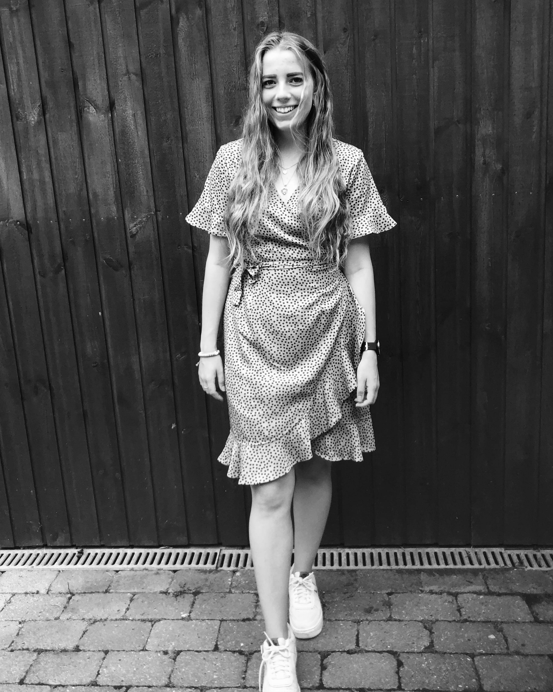

Multimediedesign studerende
Hej! Jeg hedder Sabrina, er 23 år og studerer multimediedesign. Jeg bor i Københavns Nordvestkvarter, hvor jeg på mine daglige gåture oftest finder min inspiration.
Jeg kan godt lide at være kreativ på de sociale medier, og det er der jeg har det meste af min erfaring fra. Mine yndlings adobeprogrammer er i øjeblikket Illustrator og Photoshop, hvilket jeg bruger en del af min fritid på.